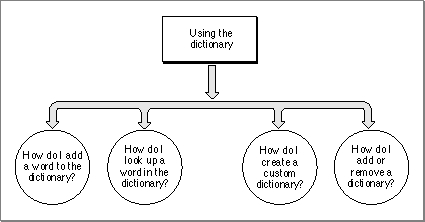
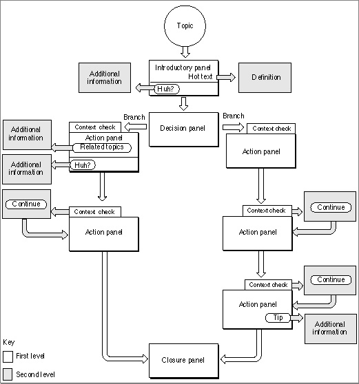
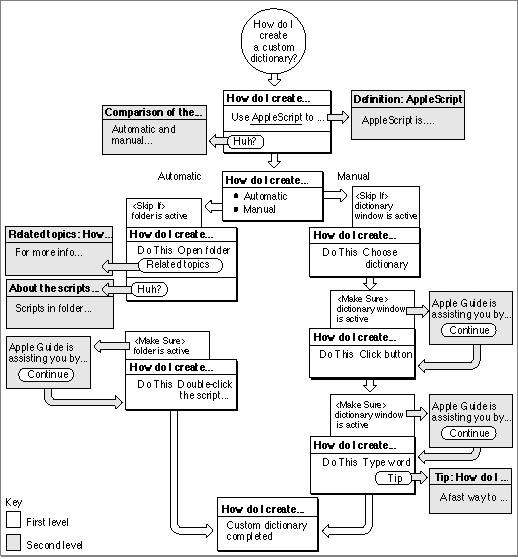

Determining and Creating Your Guide File Content
The first step in developing a guide file is to determine its content. This section suggests a two-part approach to that task. First, determine the content that your guide files should contain. Next, if possible, analyze a list of headings derived from existing reference documentation to determine topic areas and topics.
- Note
- The help focus and content differ for each of the five guide file types--About, Tutorial, Help, Shortcuts, and Other--supported by Apple Guide. For example, the About, Shortcuts, and Tutorial guide files generally contain a small number of one-level topics, whereas the Help guide file contains an extensive number of multilevel topics. If you are not already familiar with the content requirements for each guide file, see Chapter 2.
Determining Appropriate Content for Your Guide File
Remember that not all material is appropriate for your guide files. In general, place in your guide files any information that answers these questions:How do I accomplish this task?
Why can't I accomplish this task?
What is the meaning of this term?
Other information is usually better presented in reference documentation. This information includes instructions that the user needs when the computer is not turned on or working properly, or overly complex material. For example, do not include in your guide files
- installation instructions (for example, how to install your application or any other application used with it)
- extensive reference material (for example, a complete programming language reference)
- safety information (for example, how to avoid injury)
Creating Topic Areas and Topics
If you have reference documentation for your application, you can use its headings to create your topic areas and topics. Here is an example of the table of contents from the documentation describing the SurfWriter application:Copying Text
Pasting Text
Opening a File
Saving a File
Selecting Different Styles for Your Text
Changing Your Default Preferences
Using Dictionaries
Getting Started With SurfWriter
Introducing the Menus
Introducing the Toolbar
Introducing Icons
Introducing the Windows
Creating Your First Document
Command Keyboard Equivalents
The first seven headings describe tasks that many users might want to know about and that would be appropriate content for a guide file of type Help, which uses the Full Access window. Remember that with Topics selected, the left column of the window shows topic areas. You therefore need to break the headings into topic areas, and then topics. For example, you might derive from those headings the following five topic areas:
Copying & Pasting
Opening & Saving Documents
Styles
Setting Preferences
Using the Dictionary
Notice that in the first two, two headings were combined to make a single topic area.
You can now break the topic areas into one topic or several topics. For example, you might break the topic area "Using the Dictionary" into the following topics:
How do I add a word to the dictionary?
How do I look up a word?
How do I create a custom dictionary?
How do I add or remove a dictionary?
In contrast, the eighth heading of the SurfWriter manual-- "Getting Started With SurfWriter"-- and its five subheadings--"Introducing the Menu," "Introducing the Toolbar," "Introducing Icons," "Introducing the Windows," and "Creating Your First Document"--contain information that introduces users to basic features of the application. It is therefore more appropriate information for a Tutorial guide file than for a Help guide file. Here, you typically use a Single List Access window, which presents a small number of focused topics. For example, from the five subheadings you can create a Tutorial with these topics:
Using Menus
Using the Toolbar
Using Icons and Windows
Creating a Document
Finally, the ninth heading-- "Command Keyboard Equivalents"--contains a list of keyboard commands for various application features. Such quick reference information belongs in a Shortcuts guide file, using either a Single List or Simple Access window. You can create, for example, a Simple Access window with three-dimensional buttons that lead to the following topics:
Working with Menus
Working with the Toolbar
Working with Icons
Working with Windows
Editing Your Document
- Note
- If possible, minimize the number of topic areas and topics in the access window so that the user does not have to scroll the columns to view them.

Using Flowcharts to Design Your Guide File Panels
One way to plan your guide file content is to create a flowchart, in which guide file components are represented by graphic elements (for example, a topic is a circle shape, a related panel is a rectangle shape, and a branch point is a diamond). With a flowchart, you can easily view the organization of your guide file, including the topics under each topic area, the tasks under each topic, the branches in a single sequence of panels, and the panels shared among different sequences.To create a flowchart, you should know how to
If your guide file uses a Single List or Simple Access window, you need to create flowcharts that show each topic and its related panels. If your guide file uses a Full Access window, you need to create flowcharts that also break topic areas into topics. Figure 3-1 contains a flowchart for the topic area "Setting Preferences," which appears in the SurfWriter Full Access window.
- design a sequence
For example, you should know the difference between the first and second levels of panels in a sequence. For more information, see "Designing for Localization" beginning on page 2-88.
- use the panel types recommended by Apple for different categories of help instructions
For example, you should know when to use an action panel. For more information, see "Designing Panel Types" on page 2-53.
- determine context checks
For example, you should be able to determine whether Apple Guide should skip a panel if the condition on it is true. For more information, see "Using Context Checks" on page 2-81.
Figure 3-1 A flowchart that breaks topic areas into topics

The flowchart breaks the topic into four separate topics, with a circle representing each one. This flowchart is simple and therefore requires few graphical elements. To break each of these topics into a sequence requires more complex elements, as shown in Figure 3-2.
Figure 3-2 A typical flowchart

One of the topics shown in Figure 3-1-- "How do I create a custom dictionary"--is broken into a sequence that contains two branches, shown in Figure 3-3.
Figure 3-3 A flowchart for a SurfWriter sequence on creating a custom dictionary

In this example, one branch shows the user how to create a custom dictionary manually, and the other branch shows the user how to create a custom dictionary using a script. Notice that the first two panels in the sequence--the introductory and decision panels--are shared because they apply to both branches in the sequence. The introductory panel introduces the user to the topic, and the decision panel presents the user the choice of creating the dictionary using either the menu command or the script method. Until the last panel is reached, the next panels for each branch contain information specific to each branch and are therefore not shared. The last panel tells the user information that applies to both branches--specifically, that the dictionary contains the new word--and is therefore shared.
The flowchart also shows the required context checks. Notice that the two Continue panels on the right are for the same condition and could therefore be a shared panel. For more information on specifying context checks, see Chapter 2.